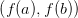
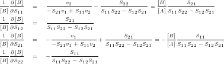

Figura 3.1: Teorema de Bolzano.
O teorema de Bolzano2 nos fornece condições suficientes para a existência do zero de uma função. Este é uma aplicação direta do teorema do valor intermediário.
Teorema 3.1.1 (Teorema de Bolzano). Se f : [a,b] → ℝ, y = f(x), é uma função contínua tal que f(a) ⋅ f(b) < 0, então existe x∗ ∈ (a,b) tal que f(x∗) = 0.
Demonstração. O resultado é uma consequência imediata do teorema do valor intermediário que estabelece que dada uma função contínua f : [a,b] → ℝ, y = f(x), tal que f(a) < f(b) (ou f(b) < f(a)), então para qualquer d ∈  (ou k ∈ ) existe x∗ ∈ (a,b) tal que f(x∗) = k. Ou seja, nestas notações, se f(a) ⋅ f(b) < 0, então f(a) < 0 < f(b) (ou f(b) < 0 < f(a)). Logo, tomando k = 0, temos que existe x∗ ∈ (a,b) tal que f(x∗) = k = 0. __
Em outras palavras, se f(x) é uma função contínua em um dado intervalo no qual ela troca de sinal, então ela têm pelo menos um zero neste intervalo (veja a Figura 3.1).
Exemplo 3.1.1. Mostre que existe pelo menos uma solução da equação ex = x + 2 no intervalo (−2,0).
Solução. Primeiramente, observamos que resolver a equação ex = x + 2 é equivalente a resolver f(x) = 0 com f(x) = ex − x − 2. Agora, como f(−2) = e−2 > 0 e f(0) = −2 < 0, temos do teorema de Bolzano que existe pelo menos um zero de f(x) no intervalo (−2, 0). E, portanto, existe pelo menos uma solução da equação dada no intervalo (−2, 0).
Podemos usar o Scilab para estudarmos esta função. Por exemplo, podemos definir a função f(x) e computá-la nos extremos do intervalo dado com os seguintes comandos:
Alternativamente (e com maior precisão), podemos verificar diretamente o sinal da função nos pontos desejados com comando sign:
♢
Quando procuramos aproximações para zeros de funções, é aconselhável isolar cada raiz em um intervalo. Desta forma, gostaríamos de poder garantir a existência e a unicidade da raiz dentro de um dado intervalo. A seguinte proposição nos fornece condições suficientes para tanto.
Proposição 3.1.1. Se f : [a,b] → ℝ é um função diferenciável, f(a)⋅f(b) < 0 e f′(x) > 0 (ou f′(x) < 0) para todo x ∈ (a,b), então existe um único x∗ ∈ (a,b) tal que f(x∗) = 0.
Em outras palavras, para garantirmos que exista um único zero de uma dada função diferenciável num intervalo, é suficiente que ela troque de sinal e seja monótona neste intervalo.
Exemplo 3.1.2. No Exemplo 3.1.1, mostramos que existe pelo menos um zero de f(x) = ex − x − 2 no intervalo (−2,0), pois f(x) é contínua e f(−2) ⋅ f(0) < 0. Agora, observamos que, além disso, f′(x) = ex − 1 e, portanto, f′(x) < 0 para todo x ∈ (−2,0). Logo, da Proposição 3.1.1, temos garantida a existência de um único zero no intervalo dado.
Podemos inspecionar o comportamento da função f(x) = ex − x − 2 e de sua derivada fazendo seus gráficos no Scilab. Para tanto, podemos fazer o seguinte teste:
A discussão feita nesta seção, especialmente o teorema de Bolzano, nos fornece os fundamentos para o método da bisseção, o qual discutimos na próxima seção.
Resposta. Observamos que a equação é equivalente a cos(x) −x = 0. Tomando, então, f(x) = cos(x) −x, temos que f(x) é contínua em [0,π∕2], f(0) = 1 e f(π∕2) = −π∕2 < 0. Logo, do teorema de Bolzano 3.1.1, concluímos que a equação dada tem pelo menos uma solução no intervalo (0,π∕2). ♢
Resposta. No Exercício 3.1.1, mostramos que a função f(x) = cos(x) − x tem um zero no intervalo [0,π∕2]. Agora, observamos que f′(x) = − sen (x) − 1. Como 0 < sen x < 1 para todo x ∈ (0,π∕2), temos que f′(x) < 0 em (0,π∕2), i.e. f(x) é monotonicamente decrescente neste intervalo. Logo, da Proposição 3.1.1, temos que existe um único zero da função neste intervalo. ♢
E 3.1.3. Interprete a equação cos(x) = kx como o problema de encontrar a intersecção da curva y = cos(x) com y = kx. Encontre o valor positivo k para o qual essa equação admite exatamente duas raízes positivas distintas.
Resposta. k ≈ 0,161228 ♢
E 3.1.5. Use o teorema de Bolzano para mostrar que o erro absoluto ao aproximar o zero da função f(x) = ex − x − 2 por x = −1,841 é menor que 10−3.
Resposta. Escolhendo o intervalo [a,b] = [−1,841 − 10−3,−1,841 + 10−3], temos f(a) ≈ 5 × 10−4 > 0 e f(b) ≈−1,2 × 10−3 < 0, i.e. f(a) ⋅ f(b) < 0. Então, o teorema de Bolzano nos garante que o zero exato x∗ de f(x) está no intervalo (a,b). Logo, da escolha feita, |− 1,841 − x∗| < 10−3. ♢
E 3.1.6. Mostre que o erro absoluto associado à aproximação x = 1,962 para a solução exata x∗ de:
 |
é menor que 10−4.
Resposta. Basta aplicar as ideias da solução do Exercício 3.1.5. ♢